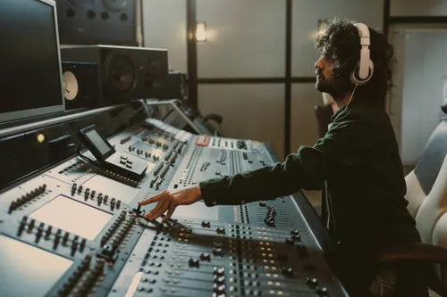

Our Production Process
Roles
Management

Director
Responsible for overseeing the entire production process, making key decisions, and ensuring the project stays on track.
Producer
Responsible for managing the production process, coordinating resources, and ensuring the project is completed on time and within budget.
Technical Director
Responsible for overseeing the technical aspects of the production, ensuring that all equipment is functioning correctly and that the technical standards are met.
Technical
Editor
Responsible for editing the footage, ensuring the final product meets the desired quality standards.
Camera operator
Responsible for operating the camera during filming, ensuring the shots are well-composed and technically sound.

Sound engineer
Responsible for recording and mixing the audio, ensuring the sound quality is clear and balanced.
Support
Makeup Artist
Only needed for live events, they are responsible for applying makeup to actors so they look their best on camera.
Maintenance Crew
Responsible for maintaining and repairing equipment, ensuring everything is in good working condition.
grip
Responsible for setting up and maintaining the lighting and camera equipment, ensuring it is safe and functional.
The standard AV production process
Pre-production
TThe process first starts with pre-production, where ideas and research are made. As a foundation of a production, pre-production must create a storyboard and plan everything before doing any filming. A location is scouted, a script is written and competent actors and crew are hired. The producer will make sure that the team has the equipment ready and working before shooting begins.
Shooting
The equipment is checked before being taken on set. The producer, director and camera operator will then locate the camera position and angling which replicates the approved scenes as actors learn their scripts. Once everyone is happy with the clips and filming finishes it is sent to editors. During this time the audio technician and editors may work together on finding or making audio to use in editing.
Editing
This is the editing phase, where the footage is edited, sound is mixed, and special effects are added to create the final product.
Integration
This is the integration phase, where all the edited elements are combined to create the final product.
Final Mixing and Mastering
This is the final phase, where the audio is refined, and the overall product is polished to meet the desired quality standards.
Factors affecting the Production Process
Several factors can influence the production process, including:
Factors affecting the Production Process
Several factors can influence the production process, including:
Sound
The quality and clarity of the audio can significantly impact the overall production value. Sound can manipulate the viewer's emotions and enhance the storytelling. Crowd noise, echo, and other audio issues can detract from the viewer's experience and make it difficult to understand the dialogue or music. however it can also ne used tp create depth
Lighting
Sets the tone and mood. Too much light/not enough makes it difficult for viewers and players to see.
Graphics design
Mainly for streaming, graphics design relays what the audience sees..
Stage Design
This is what the audience will see on stage.